Zennの「QA」のフィード
フィード
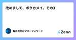
改めまして、ボク亀井です。その3
Zennの「QA」のフィード
はじめに 改めまして、ボク亀井です。その2の続きです。 10月26日、秋の旬なアーキテクチャLT会 supported by KIKKAKE CREATIONに登壇するので、棚卸しをしています。自分を知ってもらう機会かと思い、Zennにも投稿します〜 プログラミング言語 Perl Java(1.4とかw) Struts JavaScript PrototypeJS jQuery Vue Node Next.js PHP Cake Laravel Python SQL 設計 機能設計 DB設計 アーキテクチャ設計 他 Docker ラズパイ Po...
1日前
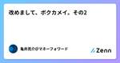
改めまして、ボク亀井です。その2
Zennの「QA」のフィード
はじめに 改めまして、ボク亀井です。その1の続きです。 10月26日、秋の旬なアーキテクチャLT会 supported by KIKKAKE CREATIONに登壇するので、棚卸しをしています。自分を知ってもらう機会かと思い、Zennにも投稿します〜 仕事のスタイル アジャイル・スクラム前提 TDD（テスト駆動開発推奨） ユニットテストは大事（ユニットテストだけで品質保証できるとは言っていない） DevOpsにおけるQAを実現したいので、Four Keysも重要視、生産性は下げたくない 成功体験 新電力サービス業案件に入ったら、リリース3ヶ月前に300個のバグがある→リ...
2日前
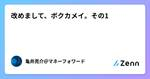
改めまして、ボク亀井です。その1
Zennの「QA」のフィード
はじめに 10月26日、秋の旬なアーキテクチャLT会 supported by KIKKAKE CREATIONに登壇するので、棚卸しをしています。自分を知ってもらう機会かと思い、Zennにも投稿します〜 お前は何者だ！ ITのことなら何でもやってしまう人 一応QAという肩書きがついている DevOpsを前提としたQAを全社的にどう実現するかを考える人 結局、標準化を推進する人 経歴 24歳: 東京のソフトハウスでバイト、UNIXサーバ4台に囲まれてWebサービスのテスト 25歳: 結婚をきっかけに開発会社に入社、主にJava(1.4系)とJavaScriptを書く 2...
3日前
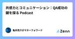
共感力とコミュニケーション：QA成功の鍵を探る Podcast
Zennの「QA」のフィード
Podcast https://podcasters.spotify.com/pod/show/-qa-in-devops/episodes/QA-e2n5tmp YouTube https://youtu.be/mQnlAR0l_EI
4日前
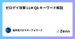
ゼロデイ攻撃 LLM QA キーワード解説
Zennの「QA」のフィード
ゼロデイ攻撃 ゼロデイ攻撃とは、ソフトウェアやシステムに存在するセキュリティ脆弱性が開発者やシステム管理者に発見・修正される前に、その脆弱性を悪用して行われるサイバー攻撃です。ゼロデイ攻撃は、脆弱性に対する修正やパッチがリリースされていない状態で行われるため、組織や個人にとって非常に危険です。 QA観点でのゼロデイ攻撃の説明 1. QAで対応が難しい理由 ゼロデイ攻撃は、脆弱性が公知になる前に行われるため、QAチームや開発チームがテスト中にこの脆弱性を特定して防ぐことが非常に困難です。通常のQAプロセスでは、既知の脆弱性に基づいてセキュリティテストや脆弱性スキャンを行います...
5日前
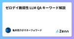
ゼロデイ脆弱性 LLM QA キーワード解説
Zennの「QA」のフィード
ゼロデイ脆弱性 ゼロデイ脆弱性とは、ソフトウェアやシステムに存在するセキュリティ上の欠陥や脆弱性が、開発者やセキュリティチームによって認識される前に、攻撃者によって悪用される脆弱性のことを指します。名前の由来は、開発者が脆弱性に対応するための猶予が「ゼロ日（zero day）」しかないことからきています。 QA観点でのゼロデイ脆弱性の説明 1. 予測不可能な脆弱性 ゼロデイ脆弱性は、開発者やQAチームがテスト中に検出できない場合が多く、既存のテストケースやセキュリティチェックをすり抜けます。QAのプロセスでは、こうした未知の脅威を防ぐために、セキュリティテストを高度化し、脆...
6日前
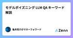
モデルポイズニング LLM QA キーワード解説
Zennの「QA」のフィード
モデルポイズニング モデルポイズニングは、機械学習モデルに対する攻撃手法の一種であり、悪意あるデータを学習プロセスに組み込むことで、モデルのパフォーマンスや信頼性を意図的に低下させる行為を指します。特にAIや機械学習を使用するシステムにおいて、モデルポイズニングは深刻な脅威となります。QA（品質保証）の観点から、この脅威に対処するための対策や注意点を理解することが重要です。 モデルポイズニングの概要 モデルポイズニングは、以下の方法で実行されることが多いです： 悪意のあるデータの混入: 攻撃者が、学習データに意図的に不正確または操作されたデータを挿入することで、モデルが不正な...
7日前
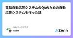
電話自動応答システムのQAのための自動応答システムを作った話 22
22
Zennの「QA」のフィード
はじめに こんにちは。電話AI SaaS IVRyのAIエンジニアの町田です。 IVRyは従来のプッシュ型の自動応答システムに留まらず、LLMを積極的に活用したAI音声対話システムを開発しています。2023年初頭にAI対話システムの開発を開始してから1年半、多くの企業に実際に導入され、ほぼ毎週新機能や改善のリリースを行うまでに成長しました。 https://ivry.jp/pr/20240123/ しかし、実際の音声対話をベースとしたAI電話アプリケーションの開発は、従来のWebアプリケーション開発とは異なる独自の課題を抱えています。毎週の新機能や改修を安定的にリリースすることは、決...
8日前
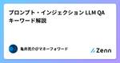
プロンプト・インジェクション LLM QA キーワード解説
Zennの「QA」のフィード
プロンプト・インジェクション プロンプト・インジェクションは、AIシステムや自然言語処理（NLP）システムに対して悪意のある入力を行い、その応答や動作に意図的な操作や改ざんを引き起こす攻撃手法です。特に大規模言語モデルやチャットボット、生成AIが使用されるシステムにおいて、ユーザーの入力内容（プロンプト）に対してAIがどのように応答するかを操作することを目的としています。 プロンプト・インジェクションのQA観点での説明 1. セキュリティの脆弱性評価 QAの観点から、プロンプト・インジェクションはシステムのセキュリティに関わる重大な脆弱性です。プロンプト・インジェクション攻...
8日前
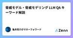
脅威モデル・脅威モデリング LLM QA キーワード解説
Zennの「QA」のフィード
脅威モデル・脅威モデリング 脅威モデル（脅威モデリング）は、システムやアプリケーションに対してどのような脅威が存在し、それらの脅威がどのように悪影響を及ぼす可能性があるかを体系的に分析・評価する手法です。QA（品質保証）の観点からは、脅威モデリングは、システムのセキュリティ品質を向上させ、リスクを軽減するために不可欠なプロセスです。 脅威モデリングの概要 脅威モデリングは、次のステップで進行するプロセスです： システムの理解 システムのアーキテクチャやフロー、データの流れを理解し、どこに脆弱性が存在しうるかを把握します。この段階で、システムの全体像を視覚化することが重要です（...
9日前
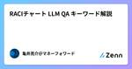
RACIチャート LLM QA キーワード解説
Zennの「QA」のフィード
RACIチャート RACIチャートは、プロジェクトや業務の役割と責任を明確にするためのフレームワークです。RACIは、それぞれの役割を示す4つの英単語の頭文字を取ったもので、以下の4つの責任カテゴリを定義します。 RACIの意味 R（Responsible） - 実行責任者 そのタスクやプロセスを実際に担当し、遂行する責任を負う人。複数の担当者がいる場合もあります。 実際に「手を動かして」業務を遂行する立場。 A（Accountable） - 最終責任者 タスクやプロジェクトの結果について最終的な責任を持つ人物。この役割は通常1人だけであり、成果物や結果が期待どおり...
10日前
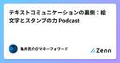
テキストコミュニケーションの裏側：絵文字とスタンプの力 Podcast
Zennの「QA」のフィード
Podcast https://podcasters.spotify.com/pod/show/-qa-in-devops/episodes/ep-e2n5qcc YouTube https://youtu.be/XpdLua3x2Pg
11日前
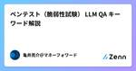
ペンテスト（脆弱性試験） LLM QA キーワード解説
Zennの「QA」のフィード
ペンテスト ペンテスト（ペネトレーションテスト、脆弱性試験）は、QA（品質保証）の観点から、システムやアプリケーションのセキュリティ品質を評価するための重要なテスト手法です。QAプロセスにおいては、通常の機能テストやパフォーマンステストに加えて、セキュリティテストが必要不可欠であり、ペンテストはその一環として、システムの脆弱性を特定し、攻撃に対する耐性を評価する役割を担います。 ペンテストの概要 ペンテストは、攻撃者の視点からシステムやアプリケーションに対して意図的に攻撃を行い、セキュリティホールや脆弱性を発見するためのテストです。実際の攻撃手法をシミュレートし、不正アクセスやデ...
12日前
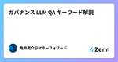
ガバナンス LLM QA キーワード解説
Zennの「QA」のフィード
ガバナンス ガバナンスは、QA（品質保証）において、品質基準やプロセスの維持、リスク管理、コンプライアンスを組織全体で適切に管理するための枠組みを提供します。QAにおけるガバナンスの役割は、品質の一貫性を保証し、製品やサービスの信頼性、セキュリティ、効率性を維持するための重要な要素です。 QAにおけるガバナンスの主な要素 1. 品質ポリシーの策定と遵守 ガバナンスは、組織の品質ポリシーや基準を策定し、それが全てのプロジェクトや製品開発において一貫して適用されることを保証します。これにより、プロジェクトごとにバラつきがなく、品質が統一された製品やサービスを提供することが可能と...
13日前
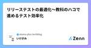
リリーステストの最適化～教科のハコで進めるテスト効率化 1
Zennの「QA」のフィード
こんにちは！atama plusでQAをやっている池上です。 ソフトウェア開発においては、QCD（品質・コスト・納期）のバランスを整えながら、ユーザーに良いプロダクトを提供することが重要です。 本記事では、教材という特性を踏まえたテストケースの効率化について紹介します。 はじめに atama plusでは、学生向けのAIを用いた学習システムを開発しており、複数の開発チームがそれぞれ同一プロダクトの異なる部分を担当しています。 リリース前には各チームのプログラムを統合し、網羅的なリグレッションテストである「リリーステスト」を実施しています。 QAチームは、生徒の学習体験を網羅することを...
14日前

マルウェア LLM QA キーワード解説
Zennの「QA」のフィード
マルウェア マルウェア（Malware）は、QA（品質保証）の観点から、セキュリティとシステムの信頼性に深刻なリスクをもたらす要素として非常に重要です。マルウェアは「悪意のあるソフトウェア」の略で、ウイルス、ワーム、トロイの木馬、ランサムウェア、スパイウェアなど、さまざまな種類の不正なプログラムを指します。これらは、システムの動作を妨害したり、機密情報を盗んだり、システム全体を破壊することを目的としています。 1. マルウェアの概要 目的：マルウェアは、システムやデータへの不正アクセス、情報の盗難、システムの破壊や乗っ取りを狙ったソフトウェアです。攻撃者が意図的に開発し、イ...
14日前
レッドチーム LLM QA キーワード解説
Zennの「QA」のフィード
レッドチーム レッドチームは、QA（品質保証）の観点から、セキュリティテストやリスク管理において重要な役割を果たす概念です。主に組織のセキュリティ対策を評価し、改善するために行われる攻撃的なテストやシミュレーションを担当します。具体的には、レッドチームは外部からの攻撃者の視点に立って、システムやネットワークの脆弱性を発見し、どのように侵入できるかを検証します。 1. レッドチームの概要 レッドチームは、セキュリティ対策や防御の強化を目的とした攻撃側の役割を担い、システムの弱点や防御の脆弱性を発見することに焦点を当てています。 レッドチームは実際の攻撃シナリオをシミュレートする...
15日前
スピア・フィッシング攻撃 LLM QA キーワード解説
Zennの「QA」のフィード
スピア・フィッシング攻撃 スピア・フィッシング攻撃は、QA（品質保証）の観点から、主にセキュリティとリスク管理に関連した重要な課題を引き起こします。これは、特定の個人や組織をターゲットにしたサイバー攻撃で、攻撃者が信頼できる送信元を装い、敏感な情報（パスワード、財務データなど）を入手しようとするものです。 1. スピア・フィッシング攻撃の特徴 スピア・フィッシング攻撃は、フィッシング攻撃の一種ですが、特定の個人や団体を対象にした、より精密で狙いを定めた手法です。 攻撃者は、被害者の名前、役職、関心事などの詳細な情報を収集し、それを利用して信頼感を高め、標的を騙して不正なリンク...
16日前
シャドーAI LLM QA キーワード解説
Zennの「QA」のフィード
シャドーAIとは、企業や組織内で正式な承認や管理を受けずに、特定のチームや個人が独自に導入して使用しているAIシステムやツールを指します。この「シャドーAI」は、IT部門の監視外で使用されているため、公式のAIインフラやガバナンスの外で動作しており、管理されていない「シャドーIT」のAI版と言えます。シャドーAIは、迅速な導入や業務効率化を目的に用いられることが多いですが、セキュリティリスクやコンプライアンスの問題を引き起こす可能性があります。 QA観点だとあまり関係ないように思えますが、QAのスコープにセキュリティも入ると仮定すると重要な要素なので、言葉の定義を覚えてください。
17日前
チームビルディングと開発者とのコミュニケーション術：チーム一体感と丁寧なコミュニケーションの重要性 Podcast
Zennの「QA」のフィード
概要 今回のエピソードでは、チームビルディングから開発者とのコミュニケーションに焦点を当て、シフトレフトの実践やバグ報告におけるケーススタディを共有します。一体感のあるチームを作るためには、ソフトスキルやコミュニケーション能力が欠かせません。特に、シフトレフトを効果的に行うためには、円滑なコミュニケーションが重要です。 バグの報告においても、丁寧なコミュニケーションが求められます。バグを見つけた際には、一呼吸おいて正確な情報を収集し、周辺の状況と合わせて開発者に報告することが大切です。これにより、偽陽性の報告を避け、開発者に無用なプレッシャーをかけずに済みます。 このエピソードでは、...
18日前